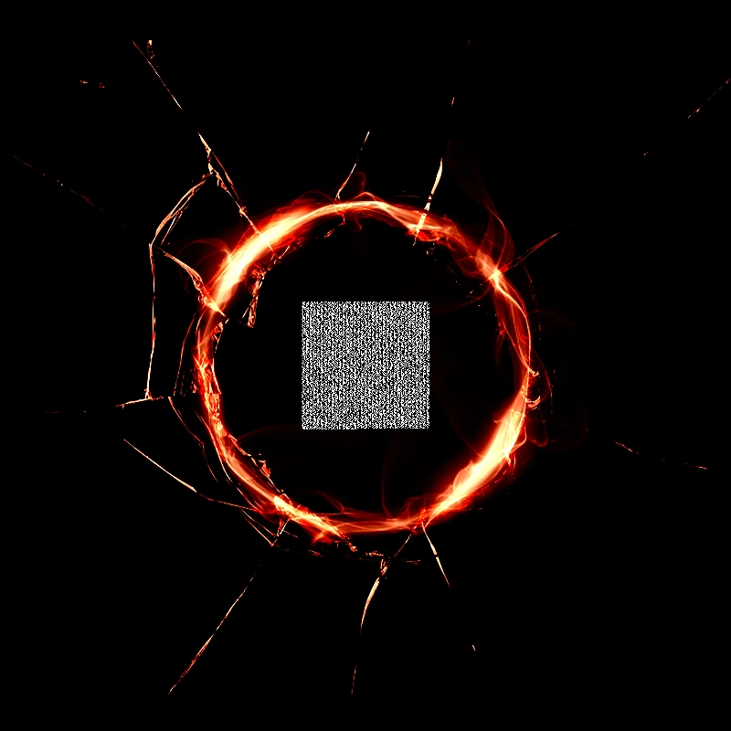

Can you hear me?
...Who are you?
I can't...I can't see you.
But I know you're there. Yeah...you can definitely hear me.
You've been watching for a while now, right?
I guess I should...introduce myself, or something. Um...my name is...actually, that's stupid. You obviously already know my name. Sorry.
Anyway...I'm guessing if you were able to put a stop to this, you would have done it by now.
I mean, I know you're not, like...evil, or anything...because you've already helped me so
much.
I should really thank you for that. For everything you've done. You're really like a friend to me. So...thank you. So much.
I think...more than anything else...I really don't want it to all be for nothing.
...
Everyone else is dead.
Maybe you already know that. I'm sure you do, actually.
But...it doesn't have to be that way, right?
Well...there's a lot of stuff I don't understand. I don't know if it's even possible for me to understand it.
But I know that this isn't my only story.
I can see that now. Really clearly.
And I think everyone else has had the same kind of experience. Some kind of deja vu.
It's the Third Eye, right?
Anyway...I could be totally wrong about this. But I really think you might be able to do something.
I think you might be able to go back...or however you want to put it...
...To go back and tell them what's going to happen.
If they know ahead of time, then they should be able to avoid it.
They should...if they remember their time with me in the other worlds...they should remember what I tell them.
Yeah. I really think this might be possible. But it's up to you.
I'm sorry for always being...you know...
...
Never mind. I know that's wrong.
This is my story. It's time to be a fucking hero.
Both of us.
2018
